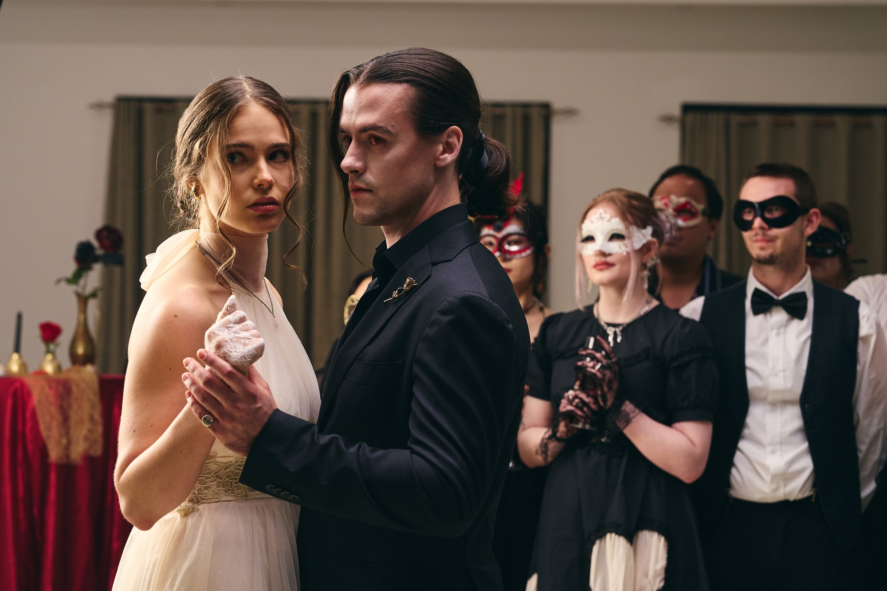
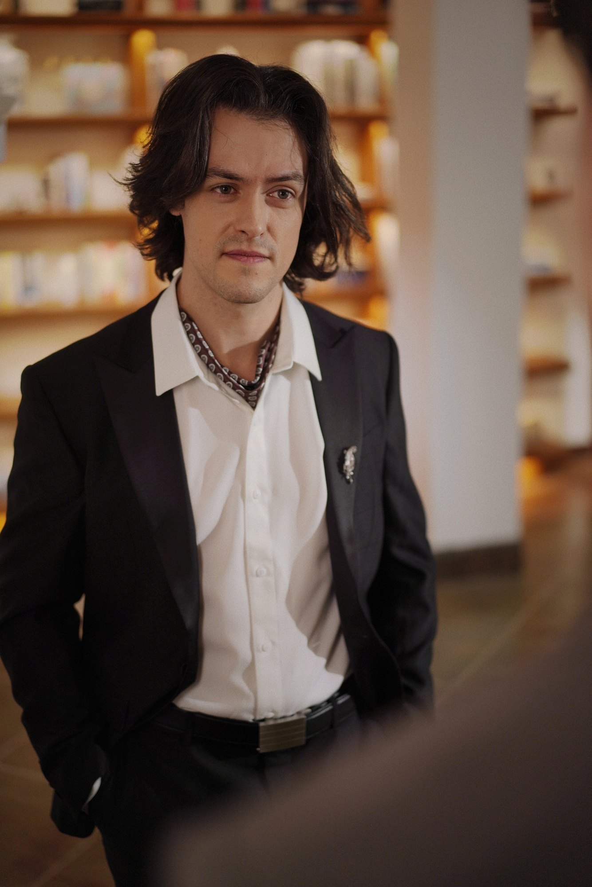
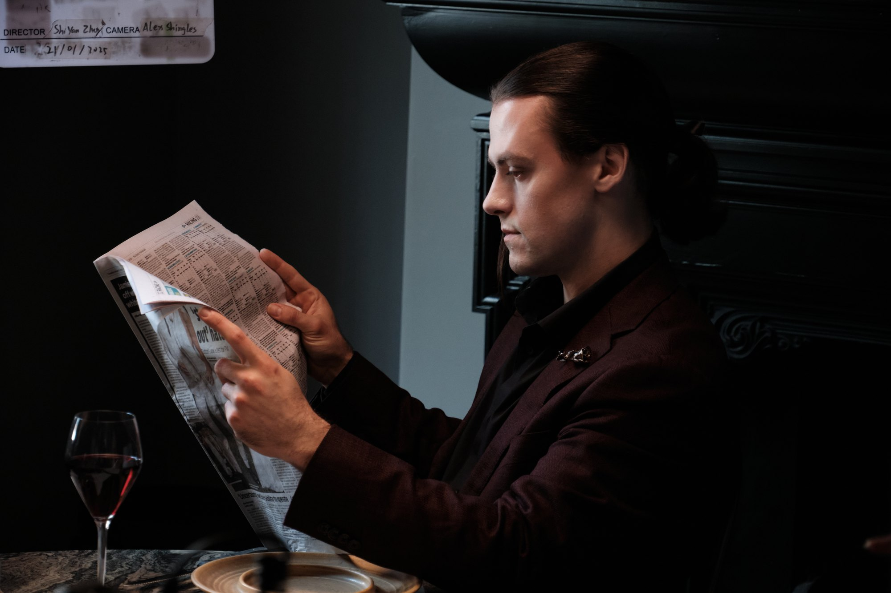
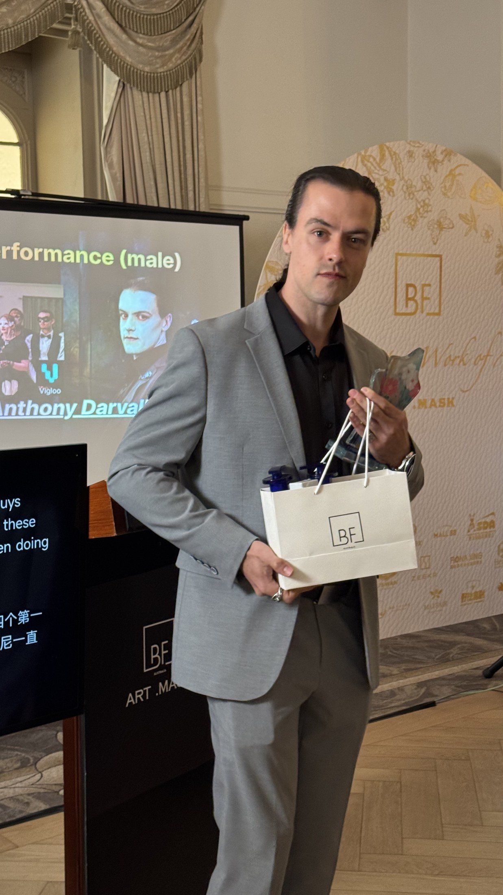

International short-form drama
Romance, danger and serial storytelling.
A focused presentation of Anthony’s international short-form drama work, including romantic leads, antagonists, supernatural roles and high-volume serial production.
Lead & villain reels
Two distinct casting lanes.
Romantic authority on one side. Polished threat on the other.
Villain Reel
Selected roles
Characters built for pressure.
Selected international serial-drama performances across supernatural romance, rivalry and social gamesmanship.
Vampire’s Forbidden Kiss
A charismatic vampire supremacist whose courtly charm conceals a vision of humanity living beneath his kind.
Cinderella’s Royal Secret
A socially fluent playboy caught in a love triangle, whose reputation keeps both the heroine and the audience guessing whether he is an ally or a danger. He understands the social game perfectly and quietly resents the performance it requires.
Return of the Racing King
A volatile rival across a fifty-two episode serial drama.
Alpha King, Your Pregnant Luna Escaped
Supporting work in an Australian-produced fantasy romance.




Recognition
Best Performance (Male).
ISDA Excellence Awards · 2025
Recognition for Anthony’s performance as Draven Bloodstone in Vampire’s Forbidden Kiss.